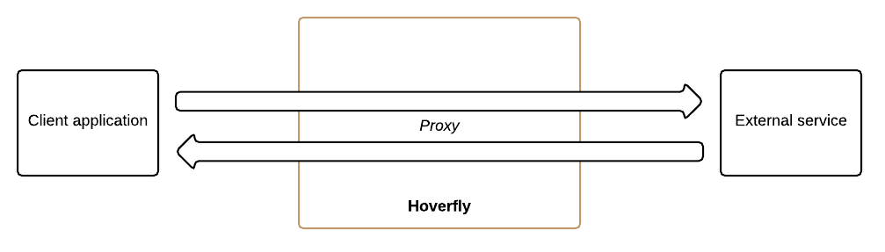
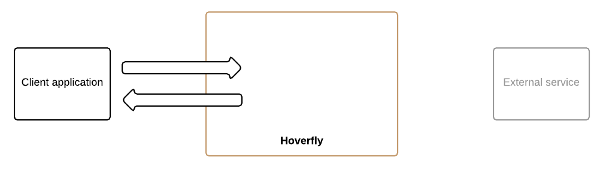
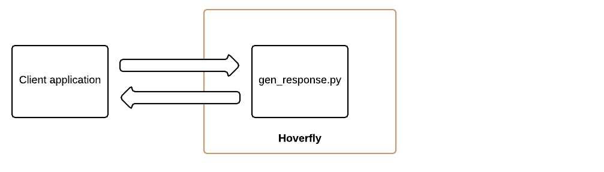
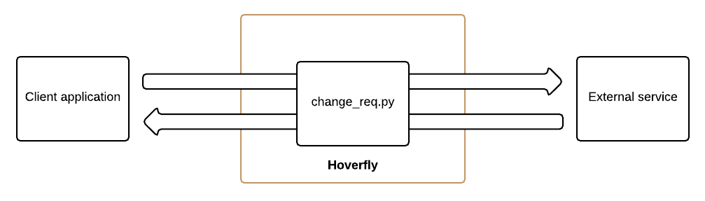

Introduction
Motivation
Building and testing interdependent applications is difficult. Maybe you’re building a mobile application that needs to talk to a legacy API. Or a microservice that relies on two other services that are still in development.
The problem is the same: how do you develop and test against external dependencies which you cannot control?
You could use mocking libraries as substitutes for external dependencies. But mocks are intrusive, and do not test all the way to the architectural boundary of your application. This means the client code for your external dependency is substituted and not tested.
Stub services are better, but they often involve too much configuration or may not be transparent to your application.
Then there is the problem of managing test data. Often, to write proper tests, you need fine-grained control over the data in your mocks or stubs. Managing test data across large projects with multiple teams introduces bottlenecks that impact delivery times.
Integration testing “over the wire” is problematic too. When stubs or mocks are substituted for real services (in a continuous integration environment for example) new variables are introduced. Network latency and random outages can cause integration tests to fail unexpectedly.
Hoverfly was designed to provide you with the means to create your own “dependency sandbox”: a simulated development and test environment that you control.
Hoverfly grew out of an effort to build “the smallest service virtualization tool possible”.
Feature overview
- “Capture” traffic between a client and a server application
- Use captured traffic to simulate the server application
- Export captured service data as a JSON file
- Import service data JSON files
- Simulate latency by specifying delays which can be applied to individual URLs based on regex patterns, or based on HTTP method
- Flexible request matching using templates
- Supports “middleware” (which can be written in any language) to manipulate data in requests or responses, or to simulate unexpected behaviour such as malformed responses or random errors
- Supports local or remote middleware execution (for example on AWS Lambda)
- Uses BoltDB to persist data in a binary file on disk - so no additional database is required
- REST API
- Run as a transparent proxy or as a webserver
- High performance with minimal overhead
- JUnit rule “wrapper” is available as a Maven dependency
- Supports HTTPS and can generate certificates if required
- Authentication (combination of Basic Auth and JWT)
- Command line interface (“hoverctl”)
- Admin UI to change state and view basic metrics
Use cases
Hoverfly is designed to cater for two high-level use cases.
Capturing real HTTP(S) traffic between an application and an external service for re-use in testing or development.
If the external service you want to simulate already exists, you can put Hoverfly in between your client application and the external service. Hoverfly can then capture every request from the client application and every matching response from the external service (capture mode).
These request/response pairs are persisted in Hoverfly, and can be exported to a service data JSON file. The service data file can be stored elsewhere (a Git repository, for example), modified as required, then imported back into Hoverfly (or into another Hoverfly instance).
Hoverfly can then act as a “surrogate” for the external service, returning a matched response for every request it received (simulate mode).
This is useful if you want to create a portable, self-contained version of an external service to develop and test against.
This could allow you to get around the problem of rate-limiting (which can be frustrating when working with a public API).
You can write Hoverfly extensions to manipulate the data in pre-recorded responses, or to simulate network latency.
You could work while offline, or you could speed up your workflow by replacing a slow dependency with a fast Hoverfly “surrogate”.
More information on these use-cases is available here:
Creating simulated services for use in a testing or development.
In some cases, the external service you want to simulate might not exist yet.
You can create service simulations by writing service data JSON files. This is in line with the principle of design by contract development.
Service data files can be created by each developer, then stored in a Git repository. Other developers can then import the service data directly from the repository URL, providing them with a Hoverfly “surrogate” to work with.
Instead of writing a service data file, you could write a “middleware” script for Hoverfly that generates a response “on the fly”, based on the request it receives (synthesize mode).
More information on this use-case is available here:
Proceed to the “Modes” and middleware section to understand how Hoverfly is used in these contexts.
Modes and middleware
Hoverfly modes
Hoverfly has four modes. Detailed guides on how to use these modes are available in the Usage section.
Capture mode

In this mode, Hoverfly acts as a proxy between the client application and the external service. It transparently intercepts and stores out-going requests from the client and matching incoming responses from the external service.
This is how you capture real traffic for use in development or testing.
Simulate mode

In this mode, Hoverfly uses either previously captured traffic, or imported service data files to mimic the external service.
This is useful if you are developing or testing an application that needs to talk to an external service that you don’t have reliable access to. You can use the Hoverfly “surrogate” instead of the real service.
Synthesize mode

In this mode, Hoverfly doesn’t use any stored request/response pairs. Instead, it generates responses to incoming requests on the fly and returns them to the client. This mode is dependent on middleware (see below) to generate the responses.
This is useful if you can’t (or don’t want to) capture real traffic, or if you don’t want to write service data files.
Modify mode

In this mode, Hoverfly passes requests through from the client to the server, and passes the responses back. However, it also executes middleware on the requests and responses.
This is useful for all kinds of things such as manipulating the data in requests and/or responses on the fly.
Middleware
Middleware can be written in any language, as long as that language is supported by the Hoverfly host. For example, you could write middleware in Go, Python or JavaScript (if you have Go, Python or NodeJS installed on the Hoverfly host, respectively).
Middleware is applied to the requests and/or the responses depending on the mode:
- Capture Mode: middleware affects only outgoing requests
- Simulate Mode: middleware affects only responses (cache contents remain untouched)
- Synthesize Mode: middleware creates responses
- Modify Mode: middleware affects requests and responses
Middleware can be used to do many useful things, such as simulating network latency or failure, rate limits or controlling data in requests and responses.
A detailed guide on how to use middleware is available in the Usage section.